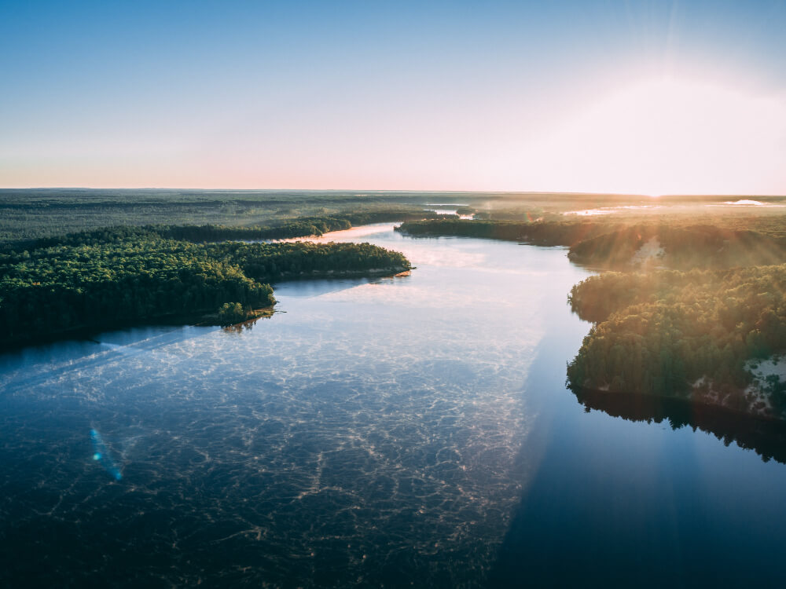

A Amazônia, o maior bioma tropical do mundo, é uma das maravilhas naturais mais impressionantes do planeta. Abrangendo uma área de aproximadamente 7 milhões de quilômetros quadrados, a Amazônia é uma fonte vital de biodiversidade, recursos naturais e serviços ecossistêmicos essenciais para o equilíbrio climático global.
Localizada principalmente na região norte do Brasil, a Amazônia se estende por nove países da América do Sul, incluindo Brasil, Peru, Colômbia, Venezuela, Equador, Bolívia, Guiana, Suriname e Guiana Francesa. No Brasil, a Amazônia abrange estados como Amazonas, Pará, Acre, Rondônia, Roraima, Amapá, além de partes de Mato Grosso, Tocantins e Maranhão.
Amazônia Legal é composta por nove estados e está dividida em duas regiões distintas: Amazônia Ocidental e Amazônia Oriental. Essa vasta área abriga 55,9% dos povos originários do Brasil. Atualmente, os estados que fazem parte da Amazônia Legal são: (Saiba mais)
A Amazônia abriga uma vasta rede fluvial, incluindo o poderoso Rio Amazonas, o maior em volume de água e o segundo mais longo do mundo após o Rio Nilo. Além do Amazonas, afluentes como o Rio Negro, o Rio Madeira, o Rio Tapajós e o Rio Xingu desempenham papéis cruciais na biodiversidade e na vida das comunidades ribeirinhas. Com uma extensão de 6.750 km e uma descarga de 200.000 a 240.000 m³/s, o Rio Amazonas é o principal curso d'água da região.
O rio Amazonas possui cerca de 1100 rios afluentes, situados tanto na sua margem esquerda quanto na sua margem direita, compreendendo toda a área de drenagem da bacia Amazônica. Entre os principais afluentes do Amazonas, estão:
| Rio Madeira | Rio Paru | Rio Jutaí |
| Rio Javari | Rio Juruá | Rio Purus |
| Rio Tefé | Rio Napo | Rio Coari |
| Rio Içá (ou Putumayo) | Rio Negro | Rio Jari |